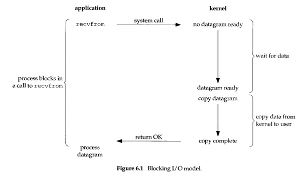
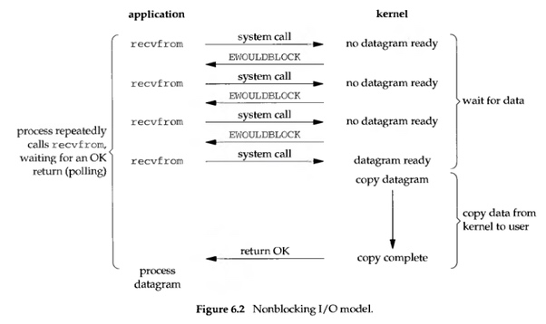
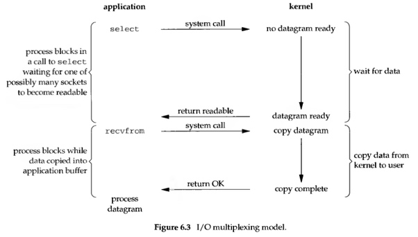
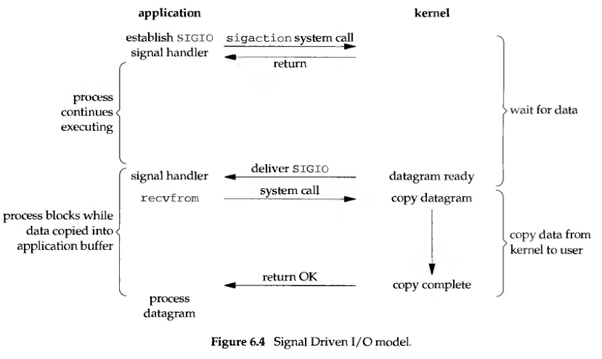
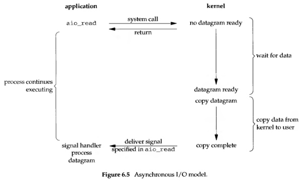
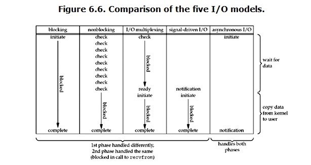

淺談 I/O Model
Carl | Jan 31, 2018
原文地址 https://medium.com/@clu1022/%E6%B7%BA%E8%AB%87i-o-model-32da09c619e6
前言
我們常常會在開發 Java I/O 相關程式的時候看到以下幾種名詞:
- blocking
- non-blocking
- synchronous
- asynchronous
這麼多名詞其實還挺讓人頭痛的, 所以想在這邊整理一下我個人對於這部分的理解. 由於這種東西你在網路上可能會看到很多種說法, 因為每個人的知識背景以及職業都存在一定程度的差異, 所以討論時的 context 也不同. 這邊我想以 Richard Stevens 所著的 [Unix Network Programming, Volume 1: The Sockets Networking API (3rd Edition)] 的 6.2 節: I/O Models 為主要出發點來做個簡單的記錄, 且基本上只討論 user space 的 I/O, 以下大部分內容都是從原文翻譯過來的.
對於一個 network I/O (以下以 read 為範例), 基本上會涉及到兩個系統層面的對象: 其一是呼叫此 I/O 的 process/thread, 再來就是系統 kernel, 而一個 read operation 基本上又會經歷以下兩個階段 (phase):
- 等待資料準備 (Waiting for the data to be ready)
- 將資料從 kernel copy 至 process/thread 中 (Copying the data from the kernel to the process)
這兩個階段很重要的原因是因為: 在這兩個階段的各部分中所存在的些微差異, 產生了以下將會談到的各種 I/O model.
Blocking I/O
基本上, Linux 中大部分的 socket 都是 blocking 的. 以下是以 UDP 為範例的 blocking I/O 流程圖 (書上寫因為 TCP 比較複雜, 所以用 UDP 做範例).

當 user process 呼叫了 recvfrom 這個 system call 時, kernel 就會進入前面提到的 I/O 之第一階段: 等待資料準備. 就 network I/O 來說, 大多數情況下, 這個時間點都還沒有資料 (datagram) 到達, 甚至是可能發生錯誤了 (通常是 system call 被 interrupt signal 中斷). 這時候 user process 就會一直處於 blocking 的狀態, 直到 recvfrom 回傳準備好的資料, 並將資料從 kernel 複製至 user process 的 memory, 最後待 kernel 回傳結果(OK) 給 user process 後, user process 才解除 blocking 的狀態並且繼續運作.
從上圖來看, 可以知道所謂的 blocking 就是在 I/O 執行的兩個階段都被 block 住了. 在 system 歸還 process 控制權之前, process 都不能再做任何的事情.
在 Java 中, FileInputStream, FileOutputStream 以及對 Socket 的讀寫基本上就是屬於這種 model.
Nonblocking I/O
在 Linux 中如果把 socket 設置成 non-blocking 的話, 就相當於告訴 kernel: “在不讓 process 進行 sleep 的情況下, 若 request 無法得到回覆, 就直接回傳 error.” 其簡單的流程圖如下:

當 user process 呼叫 recvfrom 之後, 若 kernel 這邊的資料還沒有準備好, 就不要 block user process 了, 反之, 立刻回傳一個 error(EWOULDBOLCK). 所以站在 user process 的視角來看, 呼叫 recvfrom 後並不用卡在那邊等待, 而是可以立刻得到一個結果. 當 user process 發現回傳的是 error 時, 就可以知道資料還沒準備好, 這時就可以再次發送 recvfrom 操作. 當 kernel 這邊準備好資料後, 且又再次收到來自 user process 的 system call 時, kernel 就可以把資料 copy 到 user process 中 (maybe application buffer), 然後回傳結果.
所以, nonblocking 其實就是 user process 要不斷地去問 kernel 說資料好了沒. 這在 application 中的做法, 基本上就是用一個 loop 去一直 call recvfrom, 這其實就是我們常說的 polling. 儘管這種方式看來很浪費 CPU 時間, 但似乎還是滿常見的.
對應到 Java 中, Socket Channel 就是基於這種 model 來運作的, 常見的一些 abstract class 如: ServerSocketChannel, SocketChannel 以及 DatagramChannel 等.
I/O multiplexing
所謂的 I/O multiplexing, 其實就是 select/epoll. 相似的概念如 Java NIO 裡的 selector, event driven I/O… 等. 這種 model 的好處在於使用單個 process/thread 即可同時處理多個網路連接的 I/O. 其原理就是 select/epoll 這類的 function 會一直輪詢其所負責監視的 socket, 若當中有某個 socket 已經有資料了, 就通知 user process, 流程圖如下:

當 user space 呼叫了 select 或是 epoll(上圖以 select 為例), 整個 process 就會被 block 住, 同時, kernel 會去監視所有由 select 負責的 socket, 當其中任一 socket 有資料準備好了, select 就會立刻 return. 此時 user process 再呼叫 recvfrom 將資料 copy 至 application buffer 中.
這樣看來, I/O multiplexing 其實跟 blocking I/O 沒有什麼差別, 但事實上還是有的:
- 缺點: I/O multiplexing 要用兩次 system call, 以上圖為例, 就是 select/recvfrom, 而 blocking I/O 只需要一次 system call
- 優點: 可同時處理多個 connection
綜合來看, 如果 I/O multiplexing 要處理的 connection 數量沒有很多的話, 其效能不見得會比使用 blocking I/O 的 multi-thread 程式要來得好, 甚至可能還會有較高的 latency. 要注意的是, I/O multiplexing 的優勢不是對單個連接處理會更快, 而是可以在只使用單個 process/thread 的情況下, 監視 / 處理更多的 connection.
在 Java 中, 這種 model 被用在 Selector 上, 如此一來我們就可以只用一個或是少量的執行緒來達到控制多個 channel 的目的. 且這些 channel 基本上應該要是 nonblocking 的.
Signal driven I/O
在這種 model 裡, 我們可以跟 kernel 說: 當資料準備好的時候, 給我們發個 SIGIO 信號. 這種就叫 Signal-Driven I/O, 示意圖如下:

當在 socket 上啟用 signal-driven I/O 後, 我們可以透過 sigaction 這個 system call 去安裝一個 signal handler. 這個 system call 會馬上回傳, 然後 user process 就可以繼續執行, 並不會被 block 住。當資料準備好了之後, kernel 會為 user process 產生一個 SIGIO 信號, 這時有兩種處理方式:
- 透過 recvfrom 從 signal handler 讀取資料, 然後通知 main loop 說資料已經準備好可以處理了
- 直接通知 main loop 說資料已經可以讀取了, 讓 main loop 自己去讀取跟處理
不管用哪種方式處理信號, 我們在等待資料到來的過程中都不會被 block. 對 main loop 來說, 其可以繼續執行要做的工作, 並且只需要等待 signal handler 的通知即可, 不管是資料已經讀取好並準備接受處理了或者是資料已經準備好可以被讀取了.
Asynchronous I/O
所謂的 asynchronous I/O, 就是告訴 kernel 去進行一個操作 (operation), 並且在整個操作完成(包含從 kernel 複製資料至 application buffer 裡) 的時候通知我們. 此 model 跟 signal-driven 的主要差異在於: signal-driven 中, kernel 會在 I/O 操作可以被初始化(initiated) 的時候通知我們; 但在 asynchronous 中, kernel 是在 I/O 操作完成後 (completed) 才通知我們.
這種 model 的示意圖如下:

當 user process 啟動讀取的操作 (透過 aio_read) 將 descriptor, buffer pointer, buffer size, file offset 以及當整個操作結束後如何通知 user process 等參數傳給 kernel 後, 就會立刻回傳, 這樣就不會讓 user process 產生 block. 再來, 當 kernel 這邊等到資料準備完成, 並且將資料複製到 application buffer 後, 其會向 user process 發送一個 signal, 說這個讀取操作已經完成了, 可以把資料拿去做事了. 要補充的是, 這邊送給 user process 的 signal 是由 aio_read 指定的, 所以基本上也不會送錯人.
在 Java 中, asynchronous 主要被利用在 AsynchronousSocketChannel, AsynchronousServerSocketChannel 以及 AsynchronousFileChannel 等 class 之中.
各種 I/O Model 之比較
介紹完常見的這幾種 I/O model 後, 現在就可以來看開頭提到的那幾個名詞了:
Blocking 與 nonblocking 從前面的解說中可以知道, blocking I/O 基本上會讓 user process 進入 block 的狀態, 直到操作完成才會繼續作業, 而 nonblocking 則是在 kernel 還在準備資料的情況下會立刻回傳.
Synchronous 與 Asynchronous
關於這兩個 model, POSIX 的定義是這樣寫的
- A synchronous I/O operation causes the requesting process to be blocked until that I/O operation completes
- An asynchronous I/O operation does not cause the requesting process to be blocked
所以我們可以這樣想: synchronous I/O 在執行 I/O operation 的時候會將 process/thread 給 block 住, 而 asynchronous 則不同, 其在 user process 觸發 I/O 操作後, 就直接回傳去做別的事了, 等到 kernel 處理完 I/O 後, 會發送一個信號給 user process, 說 I/O 已經結束了, 在這段過程中, user process 就沒有被 block 住 (就是叫別人去幫你等東西或是做事喇).
再換個講法, 區別這兩者的關鍵就是到底是誰在進行真正的 I/O, 如果是主執行緒, 那就是 synchronous, 若是衍生出來的子執行緒, 待子執行緒完成 I/O operation 後回報給主執行緒, 這就是 asynchronous.
講到這邊可能有些地方還是會讓人搞混, 譬如說 non-blocking 可能會被認為沒有 block 產生因而被歸類在 asynchronous 之下, 但事實上是有的. 前一段講到, synchronous I/O 在執行 I/O operation 的時候會將 process 給 block 住, 這邊對 I/O operation 的定義指的是真實的 I/O 操作 (物理意義上的). 什麼是真實的 I/O 操作呢? 像是 recvfrom 這種 system call 就是. 確實, 在 nonblocking 中, 我們會一直問 kernel 東西好了沒, 沒好就不管, 但是若好了的話呢? 這時我們就必須透過 recvfrom 來將資料 copy 至 application buffer 中, 在 copy 的這個過程, user process 就是被 block 住的. 所以也有人會說 nonblocking 是指當前這次的 I/O operation 可以保證 constant time 回傳, 但回傳的可能只有狀態 (因為資料還沒好), 所以你才要做 polling 一直去 check 看資料到底好了沒. 但在某些 context 之下, 譬如說討論一個 API 的 return 速度時, asynchronous 與 nonblocking 其實都是立刻 return, 所以在這種 context 之下, 就沒有必要那麼嚴格的區分了 (當然, 如果你用 asynchronous 去 call 一個 blocking API, 那你還是要等的, 因為 blocking 本身就不保證 constant time return). 這也是為什麼在開頭就要先限制 context 的範圍再開始介紹這些 model 的原因之一.
以下這張圖是書中的 I/O 比較圖:

從這張圖來看, 我們也可以看到 nonblocking I/O 跟 asynchronous I/O 的差異其實很明顯. 對 nonblocking 來說, 確實大部分時間都沒有被 block, 但是 user process 還是要主動地去做 check 的動作, 然後在資料準備完後, 也要自己主動呼叫 recvfrom 去把資料 copy 至 application buffer 中; 而對 asynchronous 來說, 則是 user process 把 I/O operation 整個委託給 kernel 去完成, 然後 kernel 完成後會再發信號通知 user process, 這樣一來, user process 就不用自己去 check 還有 copy 資料了, 因為這些都會由 kernel 來代勞.
結論
以上, 就是在 Java 中看到的各種 I/O 其背後的原理, 比較要注意的是對這些概念的分類要清晰, 才不會搞混.
- Synchronous I/O: 包含了 blocking I/O, nonblocking, I/O multiplexing(selector), 以及 signal-driven I/O
- Asynchronous I/O: 就是 asynchronous I/O, 但它跟 nonblocking 還是差很多的
其實對於 synchronous 這一詞, 我想還可以這樣看: 所謂的同步 (synchronous), 就是 user space 跟 kernel space 要一起合作, 由 user space trigger 一個 I/O operation, 然後由 kernel space 來回應這個 request. 至於在非同步 (asynchronous) 的概念裡, user space 就可以不用跟 kernel space 合作了, 我們可以從前面的例子中看到, 在非同步的場景下, user space 就像是買家在家裡網購一般, 一個訂單送出後, 等商家 (kernel) 把東西送到府上後再直接拿就好了. 講白了就是工具人喇.
最後, 在 Java NIO 一書裡, 有以下這段話, 我想在這邊紀錄一下以加深印象:
True readiness selection must be done by the operating system. One of the most important functions performed by an operating system is to handle I/O requests and notify processes when their data is ready. So it only makes sense to delegate this function down to the operating system. The Selector class provides the abstraction by which Java code can request readiness selection service from the underlying operating system in a portable way.
其實 Java 在 I/O 這塊還是相當依賴 OS 的, 所以要想真的了解 Java 中的 I/O, 就要先了解作業系統層面上的 I/O 原理才行.
References
Copyright © 2015 Powered by MWeb, Theme used GitHub CSS.